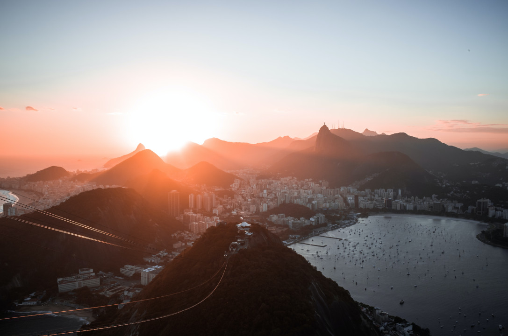
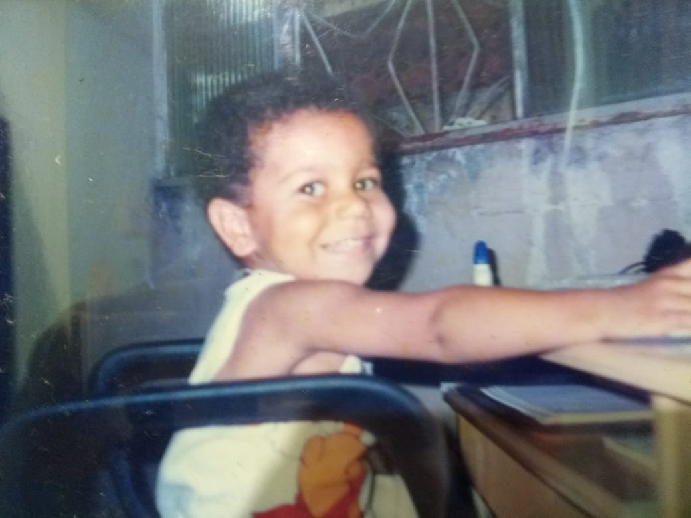
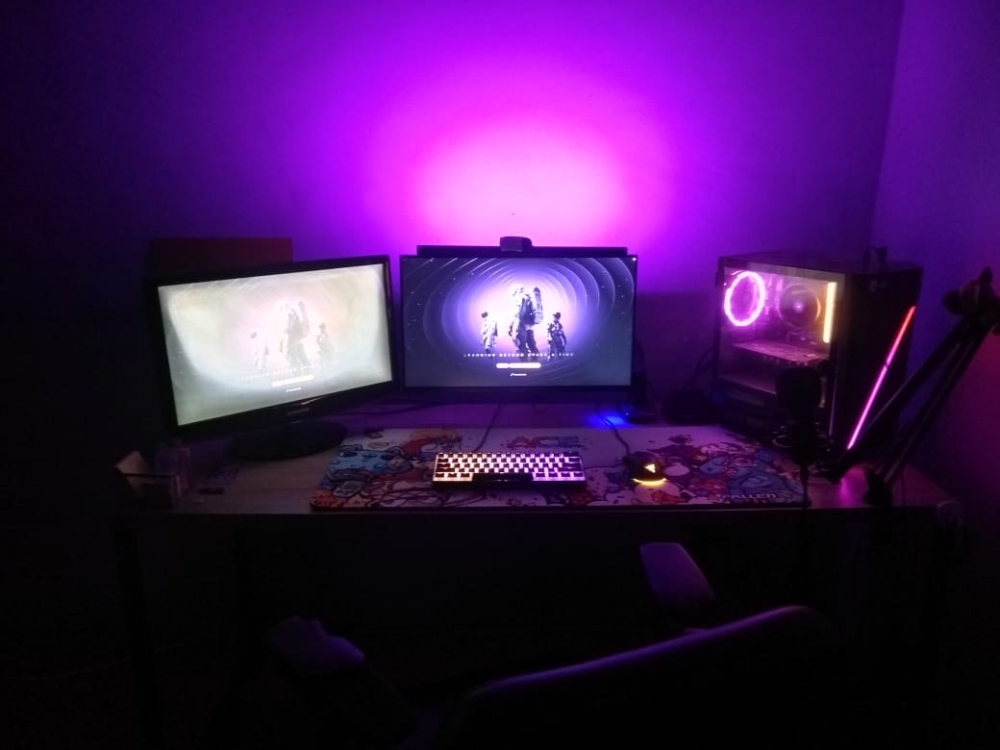

29 de junho de 2002
O começo...

Nesta cidade linda e maravilhosa nasce um menino que encontrará desafios, lutas, mas também virórias e conquistas em sua vida. Prazer, meu nome é Matheus Galdino e você seberá um pouco sobre a timeline da minha vida.
um dia qualquer...
O primeiro contato

Aqui se inicia o meu primeiro contato com aquilo que fez, faz e fará parte da minha vida. O famoso PC. Desde criança, através do meu tio, criou-se em mim essa paixão por tecnologia. Lembro-me de ficar horas sentado ao lado dele vendo-lhe jogar um jogo de RPG chamado: Dungeon Siege. Anos se passam e aos 10 anos ganho o meu primeiro PC.
19 de maio de 2023
... de um sonho

Atualmente (2023) faço faculdade de Ciência da Computação pela PUC-RIO e também um curso técnico de informática pelo Firjan-SENAI. Como falei anteriormente, sou apaixonado por tecnologia e também pelo universo gamer (NerdGeek). Quero viver fazendo aquilo que gosto e também ser um canal para que mais pessoas conheçam a tecnologia e possam viver dela. Assim como que aos poucos a tecnologia vem mudando minha vida, principalmente o meu networkig ( já que sou bem tímido ), quero que o mesmo aconteça com você. Quero e irei contribuir bastante para a comunidade de desenvolvedores do Brasil. Em breve estarei colocando mais histórias que farão parte da minha timeline